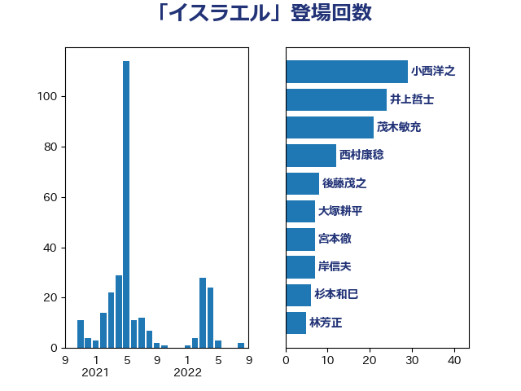

単語「イスラエル」

| 小西洋之 | 立憲民主党 | 29 回 |
| 井上哲士 | 日本共産党 | 24 回 |
| 茂木敏充 | 自由民主党 | 21 回 |
| 西村康稔 | 自由民主党 | 12 回 |
| 後藤茂之 | 自由民主党 | 8 回 |
| 大塚耕平 | 国民民主党 | 7 回 |
| 宮本徹 | 日本共産党 | 7 回 |
| 岸信夫 | 自由民主党 | 7 回 |
| 杉本和巳 | 日本維新の会 | 6 回 |
| 林芳正 | 自由民主党 | 5 回 |
| 田村憲久 | 自由民主党 | 5 回 |
| 阿部知子 | 立憲民主党 | 5 回 |
| 大島敦 | 立憲民主党 | 4 回 |
| 鈴木宗男 | 日本維新の会 | 4 回 |
| 緒方林太郎 | 無所属 | 3 回 |
| 遠藤敬 | 日本維新の会 | 3 回 |
| 上田清司 | 国民民主党 | 2 回 |
| 仁木博文 | 無所属 | 2 回 |
| 大西健介 | 立憲民主党 | 2 回 |
| 太栄志 | 立憲民主党 | 2 回 |
| 川田龍平 | 立憲民主党 | 2 回 |
| 梅村聡 | 日本維新の会 | 2 回 |
| 櫻井充 | 自由民主党 | 2 回 |
| 浜田聡 | NHK党 | 2 回 |
| 田島麻衣子 | 立憲民主党 | 2 回 |
| 近藤和也 | 立憲民主党 | 2 回 |
| 道下大樹 | 立憲民主党 | 2 回 |
| 中谷真一 | 自由民主党 | 1 回 |
| 伊藤孝恵 | 国民民主党 | 1 回 |
| 伊藤孝江 | 公明党 | 1 回 |
| 前原誠司 | 国民民主党 | 1 回 |
| 国光あやの | 自由民主党 | 1 回 |
| 塩崎彰久 | 自由民主党 | 1 回 |
| 塩田博昭 | 公明党 | 1 回 |
| 大野泰正 | 自由民主党 | 1 回 |
| 小宮山泰子 | 立憲民主党 | 1 回 |
| 小寺裕雄 | 自由民主党 | 1 回 |
| 小泉進次郎 | 自由民主党 | 1 回 |
| 山口壯 | 自由民主党 | 1 回 |
| 山本博司 | 公明党 | 1 回 |
| 岸田文雄 | 自由民主党 | 1 回 |
| 松川るい | 自由民主党 | 1 回 |
| 柚木道義 | 立憲民主党 | 1 回 |
| 柿沢未途 | 無所属 | 1 回 |
| 森田俊和 | 立憲民主党 | 1 回 |
| 榛葉賀津也 | 国民民主党 | 1 回 |
| 水岡俊一 | 立憲民主党 | 1 回 |
| 池下卓 | 日本維新の会 | 1 回 |
| 浅野哲 | 国民民主党 | 1 回 |
| 玄葉光一郎 | 立憲民主党 | 1 回 |
| 玉木雄一郎 | 国民民主党 | 1 回 |
| 田村智子 | 日本共産党 | 1 回 |
| 石井章 | 日本維新の会 | 1 回 |
| 石橋通宏 | 立憲民主党 | 1 回 |
| 緑川貴士 | 立憲民主党 | 1 回 |
| 羽田次郎 | 立憲民主党 | 1 回 |
| 西田実仁 | 公明党 | 1 回 |
| 野上浩太郎 | 自由民主党 | 1 回 |
| 長妻昭 | 立憲民主党 | 1 回 |
| 青木愛 | 立憲民主党 | 1 回 |